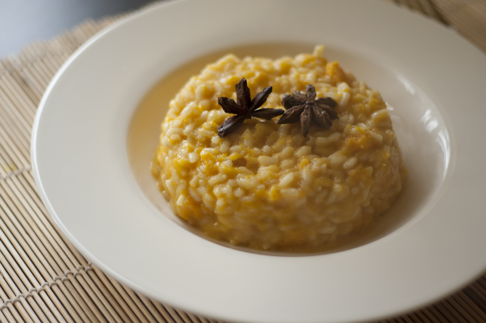

Home
Risotto alla Zucca

Description
A delicious italian main course, that brings out the sweetness of the pumpkin.
Ingredients
- Carnaroli rice 320 g
- Onions 100 g
- Parmigiano Reggiano 80 g
- Butter 50 g
- Salt as needed
- Delica pumpkin 750 g
- Vegetable broth 1.5 l
- White wine 60 g
- Black pepper as needed
- Extra virgin olive oil as needed
Steps
- Prepare the broth and keep it warm.
- Remove the peel and the seeds of the pumpkin, then cut it into slices and cut those into cubes.
- Finely chop the onion and place it in a wide pan where you have heated the oil.
- Let the onion sauté over very low heat for about 10 minutes. Use a pinch of salt to let the liquids drain out.
- Add the pumpkin and let it sauté for a few minutes, stirring. Start add warm broth and keep adding it until the pumpkin is cooked.
- Heat a pan and place inside the rice. Toast the rice on high heat for about 2-3 minutes.
- Deglaze with the wine, and as soon as the wine has completely evaporated, put the rice in the pumpkin pan.
- Stir well and cook the rice adding warm broth as needed. It will take about 15-20 minutes.
- Once the rice is cooked, turn off the heat and add the butter and the grated parmigiano.
- Add pepper, salt and stir until creamy.